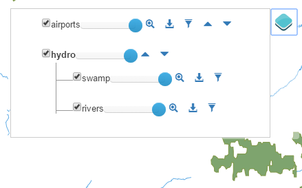
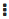
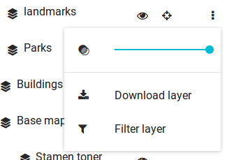
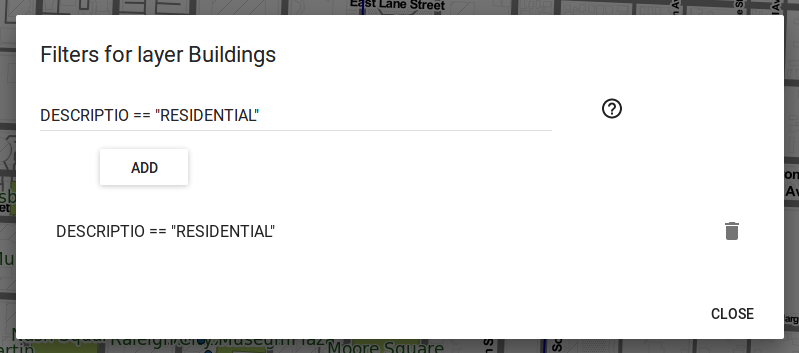
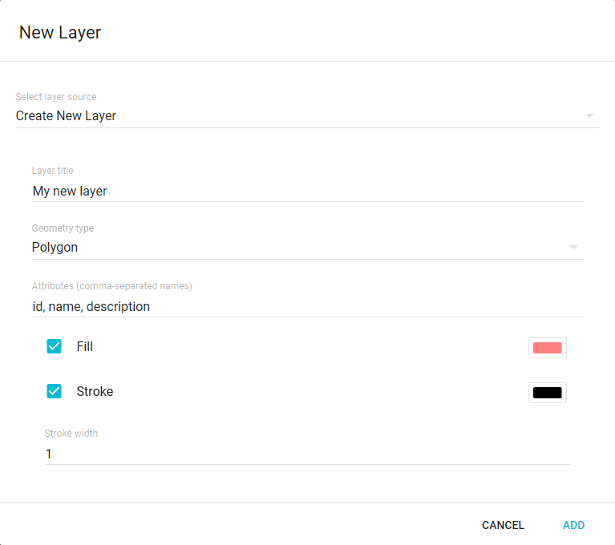

Zoom to button can also be available.
Clicking on it will cause the map extent to change to the minimum extent that covers all the features in the layer.
Zoom to button can also be available.
Clicking on it will cause the map extent to change to the minimum extent that covers all the features in the layer.The layer list shows the layers in the application and allows managing them. Click the Layers button to displays the layers list.
An eye icon is shown along the name of each layer, which allows toggling the layer's visibility.
The rendering order of layers can be modified by clicking-and-dragging the layer's names in the list. Layers on top are rendered at the end and will have rendering priority.
For vector layers, the Zoom to button can also be available.
Clicking on it will cause the map extent to change to the minimum extent that covers all the features in the layer.
Clicking the Other options button shows extra options.
The opacity of the layer can be controlled using the Opacity slider.
A Download layer button can also be available for vector layers, allowing to download the layer in a predefined file format
Vector layers features can be filtered using expressions on their attributes. Clicking on the filter icon shows the filter dialog
To add a new filter, enter an expression in the text box and click the ADD button. The Layer only renders features in the map canvas that match the active filters.
All active filters are listed below the filter field. Click on the Remove button to remove a filter.
For information on the filter syntax, click the question mark icon next to the filter field.
In the Layer list, depending on the web app settings, it may be possible to upload a local files and create new layer.
To upload a file, click the Add Layer. In the New layer dialog, for Select layer source select Upload local file. Then, clicking the  Upload file button next to Select location, browse and select the file you which to upload. Only vector layers can be uploaded. The supported formats for layers are *GeoJSON*, *GPX* and *KML*.
Upload file button next to Select location, browse and select the file you which to upload. Only vector layers can be uploaded. The supported formats for layers are *GeoJSON*, *GPX* and *KML*.
To create a new layer, click the Add Layer. In the New layer dialog, for Select layer source select Create new layerUpload local file. Then, type the Layer title and choose the Geometry type. Attributes can be added by typing their names in a comma-separated list.
Both Upload a file and Create New Layer options allow you to set the Fill and Stroke colors for the layer's features, as well as the Stroke width
. 